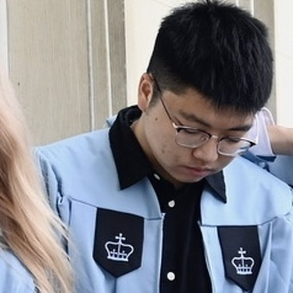
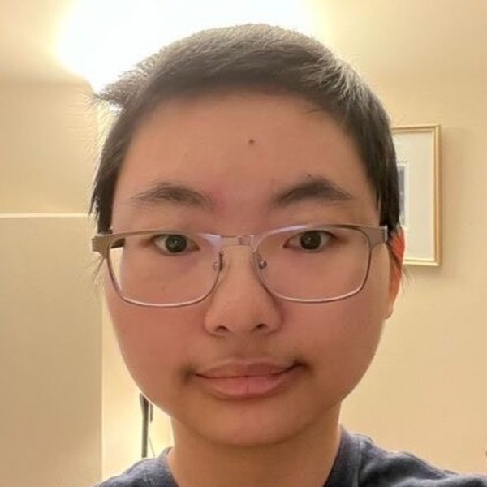
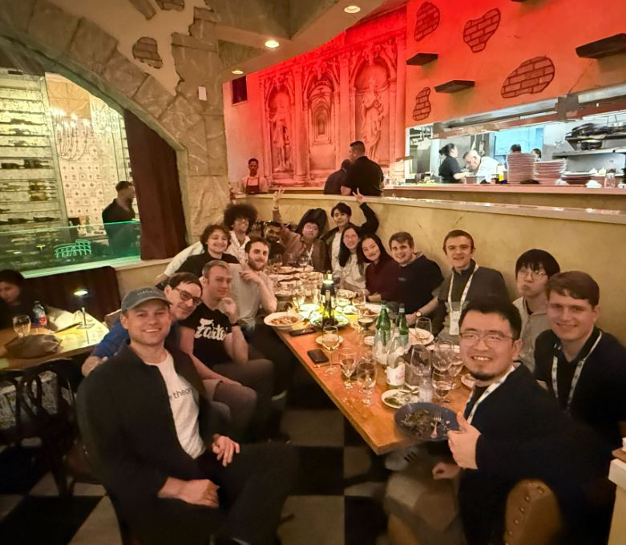
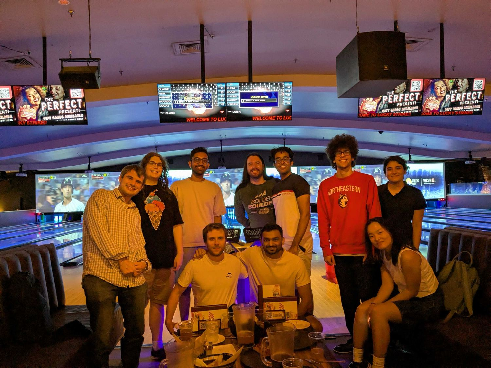

Geometric Learning Lab
We study symmetry, geometry and structure in machine learning, and put them to work in robotics and the physical sciences.
Joining the lab
I am recruiting one PhD student to start in Fall 2027. Apply through the
Khoury PhD application portal
and email me to say you have applied. A background in mathematics, physics or robotics is
welcome; so is a background in none of them, if you like thinking about structure.
Northeastern undergraduates and master's students interested in research should email me with
a short note about what you want to work on.
PhD students
PhD student

Boce Hu
PhD student

Yuanyuan Yang
PhD student
Visiting students
Alumni
Informal advisees include Ondrej Biza, Linfeng Zhao, Xupeng Zhu, Owen Howell and Colin Kohler. A full record of thesis and proposal committees is in the CV.
Lab life

